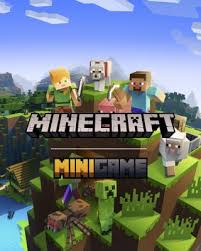
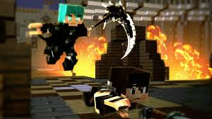
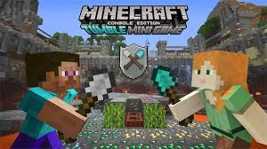
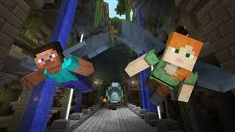

MINIGAMES
Os minijogos no Minecraft são modos de jogo especiais que oferecem diferentes formas de jogar além da experiência tradicional de sobrevivência ou criação. Eles são projetados para serem rápidos e competitivos, proporcionando diversão e desafios únicos. Três dos minijogos mais populares são Battle, Tumble e Glide.
QUAIS SÃO ELES?
BATtLE
- Objetivo: Ser o último jogador vivo.
- Recursos: Os jogadores começam sem armas e equipamentos, devendo procurar baús
- espalhados pela arena para encontrar armas, armaduras e outros itens úteis.
- Estratégia: O conhecimento da arena e a habilidade de encontrar bons itens rapidamentesão cruciais para vencer.
Battle é um minijogo de combate no estilo "batalha real". Os jogadores competem entre si em arenas, lutando para ser o último sobrevivente. Aqui estão alguns pontos chave:
TUMBLE
Tumble é um minijogo baseado em plataformas, onde os jogadores tentam fazer com que seus oponentes caiam em buracos ou na lava. Existem duas variantes: a de bolas de neve e a de pás. Aqui estão alguns pontos chave: Objetivo: Derrubar os outros jogadores nas camadas inferiores ou na lava. Recursos: Na variante de bolas de neve, os jogadores arremessam bolas de neve para destruir blocos. Na variante de pás, os jogadores usam pás para cavar blocos sob os pés dos oponentes. Estratégia: Movimentação rápida e precisa é essencial para evitar cair e ao mesmo tempo derrubar outros jogadores. 
GLIDE
Glide é um minijogo de corrida onde os jogadores usam elytras (asas) para voar através de pistas cheias de obstáculos. Aqui estão alguns pontos chave: Objetivo: Completar a pista no menor tempo possível. Recursos: Os jogadores usam elytras para planar e voar através dos circuitos. Estratégia: Conhecer bem a pista, escolher os melhores caminhos e controlar bem a velocidade e altura são essenciais para vencer.